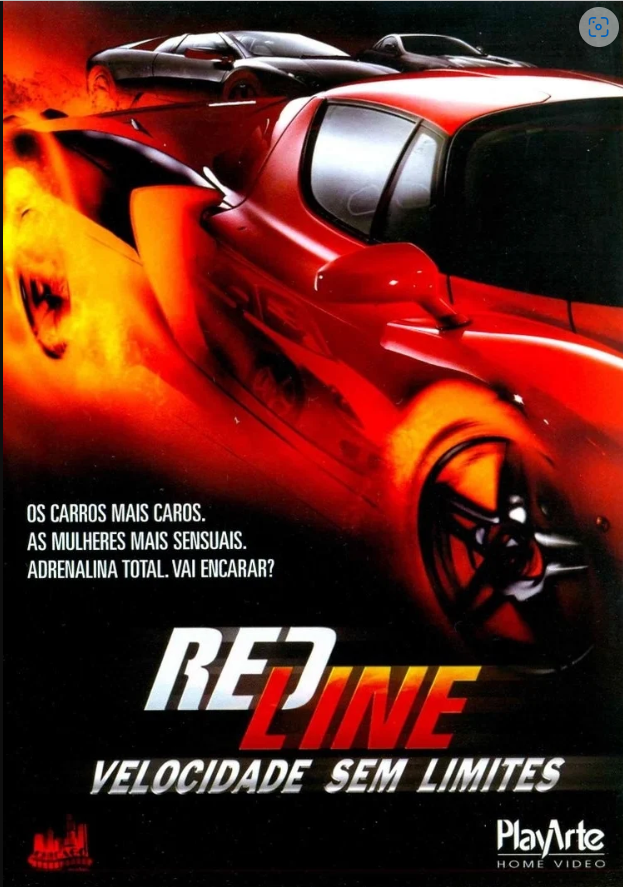
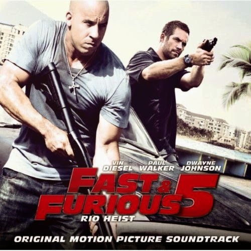

Bumblebee

Refugiado em um ferro-velho na Califórnia, Bumblebee, machucado e sem condição de uso, é encontrado e consertado pela jovem Charlie. Quando Bee ganha vida, a garota percebe que seu novo amigo é bem mais do que um simples automóvel.
Data de lançamento: 25 de dezembro de 2018 (Brasil)
Diretor: Travis Knight
Transformers - O Filme
O destino da humanidade está em jogo quando duas raças de robôs, os Autobots e os vilões Decepticons, chegam à Terra. Os robôs possuem a capacidade de se transformarem em diferentes objetos mecânicos enquanto buscam a chave do poder supremo com a ajuda do jovem Sam.
Data de lançamento: 18 de julho de 2007 (Brasil)
Diretor: Michael Bay
Redline: Velocidade sem Limites
Natasha Martin é a vocalista de uma das mais promissoras bandas da Costa Oeste dos Estados Unidos, sendo também fanática por automobilismo. Um dia ela se envolve em uma competição de corridas ilegais que possuem alguns dos carros mais caros do planeta e que é organizada para o prazer de um grupo de milionários entediados. Além disto, Natasha precisa lidar com o envolvimento da máfia, que decide investir milhões de dólares no torneio.
Data de lançamento: 13 de abril de 2007 (EUA)
Diretor: Andy Cheng
A Guerra do Amanhã

O mundo fica chocado quando um grupo de viajantes do tempo chega em 2051 para entregar uma mensagem urgente: trinta anos no futuro, a humanidade está perdendo uma guerra global contra uma espécie alienígena mortal.
Data de lançamento: 2 de julho de 2021 (mundial)
Diretor: Chris McKay
Produção: David S. Goyer, David Ellison, Don Granger, Jules Daly, Adam Kolbrenner, Dana Goldberg
Roteiro: Zach Dean
Os Mercenários

Um grupo de mercenários, liderado por Barney Ross e composto de seus homens de confiança, aceita uma missão que parece ser rotineira: uma operação secreta, a mando da Igreja, para invadir o país sul-americano de Vilena e derrubar seu ditador. Não demora muito para o grupo perceber que a missão é uma operação suicida. Presos em uma perigosa teia de traições, mas sabendo que um inocente está em perigo, Barney e seus homens decidem finalizar o trabalho.
Data de lançamento: 13 de agosto de 2010 (Brasil)
Diretor: Sylvester Stallone
Gigantes de aço

Em um futuro próximo, as máquinas substituem os homens no ringue. As lutas de boxe acontecem entre robôs de alta tecnologia. Charlie, um ex-lutador frustrado, se une ao filho para construir um competidor imbatível.
Data de lançamento: 21 de outubro de 2011 (Brasil)
Diretor: Shawn Levy
Bilheteria: 299,3 milhões USD
Orçamento: 80 milhões USD, 110 milhões USD
Música composta por: Danny Elfman
Velozes e Furiosos 5: Operação Rio
No Rio de Janeiro, eles são obrigados a fazer um último trabalho antes de ganhar sua liberdade definitiva. Brian e Dom montam uma equipe de elite de pilotos de carro para executar a tarefa, mas precisam enfrentar um empresário corrupto e também um obstinado agente federal norte-americano.
Data de lançamento: 29 de abril de 2011 (EUA)
Diretor: Justin LinVelozes e Furiosos 6

Desde que o golpe de Dom e Brian no Rio de Janeiro deixou o grupo com 100 milhões de dólares, a equipe se espalhou pelo mundo. Um dia, Hobbs pede a Dom que reúna um grupo de elite em Londres e apreenda uma organização de mercenários nas ruas, cujo mentor é apoiado por Letty, a antiga namorada de Dom que ele acreditava estar morta.
Data de lançamento: 24 de maio de 2013 (Brasil)
Diretor: Justin Lin
Velozes e Furiosos 7
Após os acontecimentos em Londres, Dom, Brian, Letty e o resto da equipe têm a chance de voltar para os Estados Unidos e recomeçar suas vidas.Agora, a equipe tem de unir forças para deter um vilão novo e ainda mais perigoso.
Data de lançamento: 2 de abril de 2015 (Brasil)
Diretor: James Wan
Distribuído por: Universal Studios
Missão Impossível 2

Ethan Hunt retorna para liderar sua equipe em uma missão que pretende capturar um vírus mortal alemão antes que ele seja liberado por terroristas. Sua missão é fazer o impossível, até porque ele não é a única pessoa procurando as amostras da doença. Ele também compete com uma gangue de terroristas internacionais, liderados por um ex-agente que já roubou a cura para o vírus.
Data de lançamento: 24 de maio de 2000 (EUA)
Diretor: John Woo
O Grande Assalto

Chris Potamitis (Liam Hemsworth) sonha em trabalhar como policial, mas como não consegue passar na prova de admissão, acaba aceitando um pequeno emprego como segurança do famoso Empire State Building. Quando descobre que a segurança do local é cheia de falhas, ele e um amigo, Eddie (Michael Angarano) planejam um roubo milionário nos cofres do local. Mas ambos enfrentam dois problemas pelo caminho: a presença de uma máfia local, que já pretendia executar um plano semelhante, e a vigilância de um policial linha dura (Dwayne Johnson), que suspeita dos planos dos rapazes e passa a espiar as ações dos dois.
Data de lançamento: 19 de março de 2013 (mundial)
Diretor: Dito Montiel
Top Gun - Ases Indomáveis

A escola naval de pilotos é onde o melhor dos melhores treinam para refinar suas habilidades de voo de elite. Quando o piloto Maverick é enviado para a escola, sua atitude irresponsável e comportamento arrogante o colocam em desacordo com os outros pilotos, especialmente Iceman. Porém Maverick não está apenas competindo para ser o piloto superior de caça, ele também está lutando pela atenção de sua bonita instrutora de voo, Charlotte Blackwood.
Data de lançamento: 10 de julho de 1986 (Brasil)
Diretor: Tony Scott
Lançamento em DVD: 20 de outubro de 1998
Top Gun: Maverick

Depois de mais de 30 anos de serviço como um dos principais aviadores da Marinha, Pete "Maverick" Mitchell está de volta, rompendo os limites como um piloto de testes corajoso. No mundo contemporâneo das guerras tecnológicas, Maverick enfrenta drones e prova que o fator humano ainda é essencial.
Data de lançamento: 26 de maio de 2022 (Brasil)
Diretor: Joseph KosinskiKarate Kid

Um garoto de 12 anos chamado Dre Parker se muda para a China com a mãe e se vê em um terra estranha. Ele sabe um pouco de caratê, mas suas habilidades não são o bastante para enfrentar o valentão da escola, Cheng. Dre faz amizade com o Sr. Han, um mestre das artes marciais, que lhe ensina os segredos do kung fu na esperança de que o garoto possa derrotar Cheng e, quem sabe, conquistar o coração da linda Mei Ying.
Data de lançamento: 27 de agosto de 2010 (Brasil)
Diretor: Harald Zwart
Música composta por: James Horner
Triplo X

Xander Cage (Vin Diesel) é um atleta de esportes radicais famoso por suas performances em público que desafiavam a própria morte. Apostando em sua capacidade em decifrar crimes não solucionados por espiões comuns, Gibbons (Samuel L. Jackson), um agente da NSA, decide recrutá-lo para sua organização. Xander aceita o convite e é escalado para uma missão onde enfrentará um inteligente, organizado e implacável inimigo.
Carga Explosiva 3

A última tarefa de Frank Martin é proteger Valentina, a cínica filha de um oficial ucraniano. Enquanto seu pai pensa sobre o que fazer com três barcos carregados de resíduos tóxicos, Frank precisa proteger a mulher problemática e impedi-la de se afastar muito de seu veículo ou evitar o risco de detonar os explosivos que os dois estão usando.
Data de lançamento: 12 de dezembro de 2008 (Brasil)
Diretor: Olivier Megaton